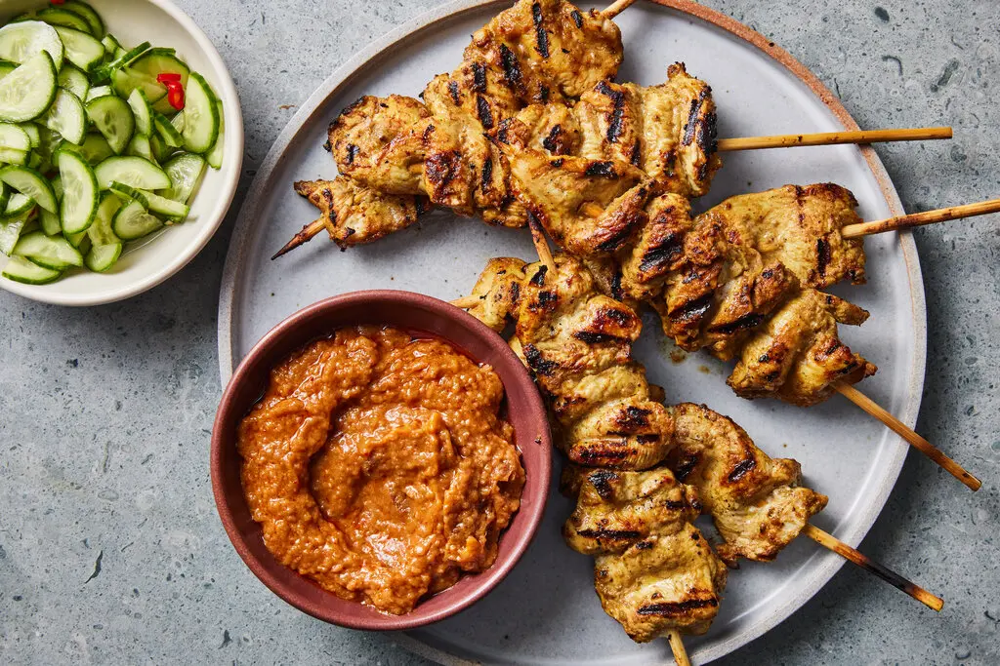

Chicken Satay Recipe

Chicken satay is a classic Southeast Asian street food: juicy, marinated chicken skewers grilled until lightly charred and served with a creamy peanut sauce.
The marinade combines soy sauce, lime, garlic, and warm spices. Serve with cucumber, onions, and extra sauce for dipping.
Ingredients:
- 1 lb boneless, skinless chicken thighs or breasts, cut into 1-inch strips
- 2 tbsp soy sauce
- 1 tbsp fish sauce (optional)
- 1 tbsp brown sugar
- 1 tbsp lime juice
- 2 cloves garlic, minced
- 1 tsp ground coriander
- 1/2 tsp ground turmeric
- 1/2 tsp ground cumin
- 2 tbsp neutral oil
- Wooden skewers, soaked in water for 30 minutes
Peanut Sauce:
- 1/2 cup creamy peanut butter
- 1/2 cup coconut milk
- 1 tbsp soy sauce
- 1 tbsp lime juice
- 1 tbsp brown sugar
- 1 tsp red curry paste or 1/2 tsp chili flakes
- 1/4 cup warm water, as needed
Instructions:
- In a bowl, whisk soy sauce, fish sauce, brown sugar, lime juice, garlic, coriander, turmeric, cumin, and oil.
- Add chicken and toss to coat. Cover and marinate for at least 30 minutes (or up to 4 hours).
- Thread chicken onto skewers, leaving a little space between pieces.
- Make the peanut sauce: warm peanut butter and coconut milk in a small saucepan over low heat, then stir in soy sauce, lime juice, brown sugar, and curry paste. Thin with warm water to a pourable consistency.
- Preheat a grill or grill pan over medium-high heat. Cook skewers 3-4 minutes per side until cooked through and lightly charred.
- Serve hot with peanut sauce and sliced cucumber or onions.
Home